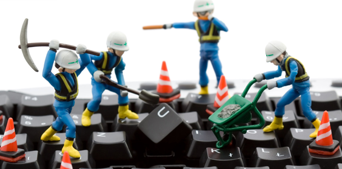

Aulas Informática
Visão geral
Aulas de informática são extremamente importantes para o futuro. Elas preparam você para os
desafios da vida moderna e ajudam-nas a compreender melhor como usar tecnologia em seu
benefício.
As habilidades adquiridas nas aulas também podem ser usadas na escola, no
trabalho e até mesmo na vida pessoal, tornando-se um recurso indispensável à medida que as
gerações avançam.
Além disso, elas ensinam boa ética digital e responsabilidade social online
duas qualidades essenciais nos dias de hoje.
Portanto, é imperativo oferecer cursos de informática principalmente às nossas crianças para
que possam ter sucesso no mundo moderno!
Curso Básico:
O curso básico de informática é uma ferramenta indispensável para auxiliar quem deseja desenvolver habilidades no uso do computador. Oferece a oportunidade de aprender os fundamentos necessários do uso de computadores, o que é útil tanto no trabalho quanto na vida cotidiana. O curso também pode fornecer conhecimento de fundamentos de programação e web design, bem como ideias úteis sobre como melhorar sua produtividade com um computador. Estas são apenas algumas das razões pelas quais recomendamos fazer este curso básico: ele fornece habilidades práticas e tecnológicas inestimáveis para o seu futuro profissional e pessoal.
Montagem e Manutenção de Computadores:
Montagem e manutenção de computadores é uma habilidade importante para qualquer pessoa que deseja obter o máximo proveito das tecnologias atuais. A capacidade de construir seu próprio sistema, instalar aplicativos novos e realizar reparos básicos significa economia financeira em vez da compra constante de novas máquinas. Além disso, ter conhecimento sobre montagem e manutenção também oferece a vantagem adicional de permitir que você melhore sua produtividade com um PC personalizado projetado especificamente para as necessidades do usuário. Por todas essas razões, aprender montagem e manutenção é altamente recomendado para aqueles interessados na tecnologia moderna.
Robótica:
A robótica é o futuro dos avanços tecnológicos e já causou um impacto significativo na vida moderna. A robótica pode ser usada para automatizar tarefas, melhorar a eficiência em processos industriais e até auxiliar em procedimentos médicos. Além de suas aplicações práticas, a robótica também oferece possibilidades empolgantes de expressão criativa por meio de instalações de arte interativas ou jogos educativos. O potencial da robótica é imenso; desde criar casas mais inteligentes até revolucionar os sistemas de transporte - as possibilidades são infinitas! Investir em tecnologia robótica agora garantirá que permaneçamos competitivos na economia global, ao mesmo tempo em que avançamos nas capacidades de nossa sociedade muito além do que se pensava ser possível.
Modelagem 3D:
A Modelagem 3D é uma ferramenta inestimável para qualquer designer, artista ou engenheiro. Permite-nos criar formas e desenhos complexos com rigor e precisão que seriam impossíveis de alcançar com os métodos tradicionais. Com a ajuda de um software avançado, podemos facilmente manipular modelos 3D para visualizar nossas ideias antes que elas se tornem realidade. A Modelagem 3D também permite simular propriedades físicas como gravidade, atrito e elasticidade que podem ser usadas para fins de teste antes de um produto entrar em produção. Isso economiza tempo e dinheiro, além de garantir o controle de qualidade em todo o processo de fabricação. Em conclusão, a modelagem 3d é essencial para quem procura criar produtos inovadores com rapidez e precisão, sem comprometer os padrões de qualidade ou segurança.
Marketing Digital:
O marketing digital é uma ferramenta incrivelmente poderosa que pode ser usada para alcançar e envolver os clientes de uma forma nunca antes possível. Com a estratégia certa, o marketing digital pode ajudar as empresas a alcançar mais pessoas com mais rapidez do que nunca. é econômico e permite campanhas direcionadas com análises detalhadas para que você saiba exatamente como está o desempenho de seus esforços. Da otimização de mecanismo de busca (SEO) à publicidade em mídia social, existem inúmeras maneiras de aproveitar as ferramentas de marketing digital para obter o máximo impacto. Investir em marketing digital agora pagará dividendos mais tarde, pois ajuda as empresas a se manterem competitivas e relevantes no cenário atual em rápida mudança de tecnologia e tendências de comportamento do consumidor.
Desenvolvimento de Games
O desenvolvimento de Games envolve uma série de etapas que vão desde a concepção da ideia até a distribuição do produto final. Inicialmente, o processo começa com o planejamento e a criação do conceito do jogo, onde se define a jogabilidade, história, personagens e mecânicas. Em seguida, a fase de design envolve a criação de elementos visuais, sonoros e interativos, usando ferramentas de arte, modelagem 3D e animação. O código é então escrito para implementar essas mecânicas e funcionalidades, frequentemente utilizando engines de desenvolvimento como Unity, Unreal Engine ou Godot. A física do jogo, inteligência artificial e lógica são codificados para criar uma experiência dinâmica e envolvente.